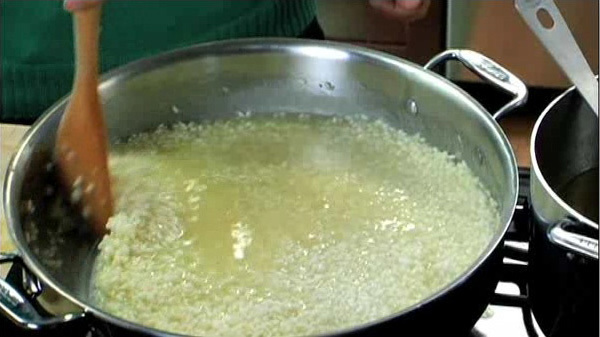

Step 1: In a heavy, wide 3- to 4-quart casserole or pot, heat the olive oil over medium heat. Add the onions and shallots and cook them until golden, stirring often, about 8 minutes. Add the rice and stir to coat with the oil. Toast the rice until the edges become translucent, 1 to 2 minutes.
